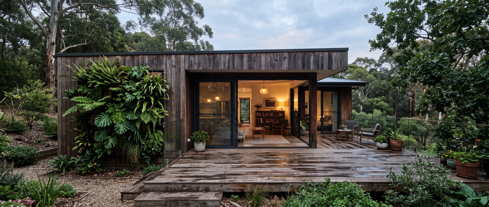
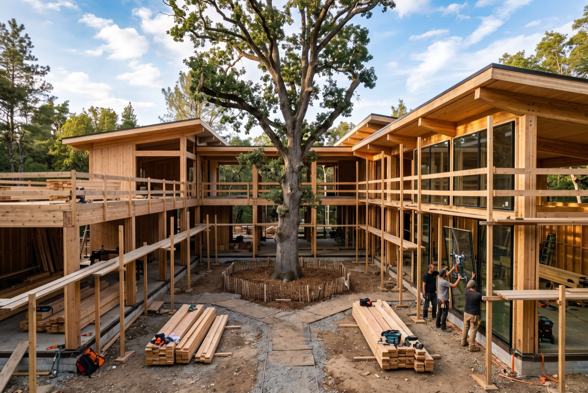
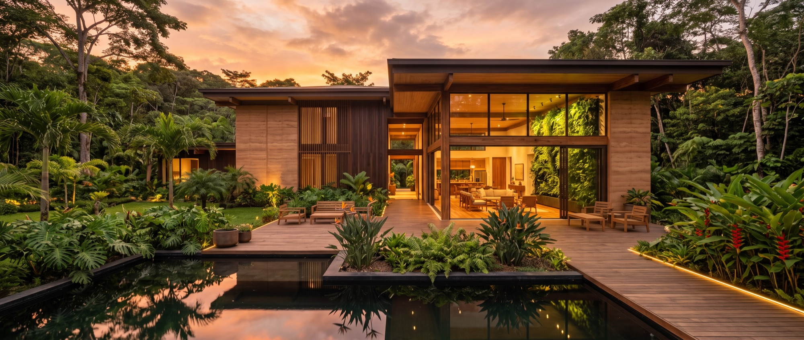

Construir é devolver à casa o que a natureza já sabia.
Somos uma construtora especializada em design biofílico. Cada projeto nasce da luz, da vegetação e dos materiais vivos, e é executado pela nossa própria equipe.
Projetamos com o terreno, não contra ele.
Arquitetos, engenheiros e paisagistas sob o mesmo teto. Quem desenha a casa é quem acompanha a obra, e quem planta o jardim já estava na primeira visita ao lote.
- 15
- anos construindo
- 320+
- obras entregues
- 6 meses
- de acompanhamento pós-entrega
Obras selecionadas
Todas as obrasQuatro frentes, uma só equipe.

Arquitetura biofílicaProjeto
Projeto autoral guiado por luz natural, ventilação cruzada, vegetação integrada e materiais de baixo impacto.
Construção e engenhariaObra
Equipe própria de engenharia e obra, com madeira engenheirada, terra e pedra aplicadas com rigor técnico e cronograma aberto.
Paisagismo integradoVerde
Jardins internos, coberturas verdes e pátios pensados junto com a arquitetura. Espécies nativas e manutenção planejada.
Reformas regenerativasReforma
Abertura de vãos, jardins de inverno, iluminação natural e conforto térmico passivo em espaços que já existem.
“Uma casa boa é aquela em que você percebe a hora do dia sem olhar o relógio.”

Helena Sylva
Arquiteta fundadoraEspecialista em design biofílico e conforto ambiental. Criou a Sylva para reunir, em uma só equipe, quem projeta, quem constrói e quem planta, e acompanha pessoalmente cada obra.
Como uma obra acontece com a gente.
Prazos estimados para uma residência de médio porte. Você recebe o cronograma completo antes de assinar.
Leitura do lugar
Insolação, ventos, vegetação existente e solo. O terreno orienta o projeto.
Conceito biofílico
Pátios, aberturas e materiais definidos junto com o programa da casa.
Executivo e orçamento fechado
Modelagem 3D, compatibilização e preço final antes de a obra começar.
Obra com equipe própria
Relatório fotográfico semanal e visitas agendadas.
Plantio e chaves
Paisagismo implantado, manual de manutenção e seis meses de acompanhamento.
Quem já mora numa casa Sylva
A Sylva entendeu que a gente queria morar dentro de um jardim, não ao lado de um. A casa é fresca sem ar-condicionado e a luz muda o dia inteiro.
O escritório inteiro respira melhor. A parede verde e a claraboia mudaram a rotina da equipe. Prazo cumprido e obra limpa.
Reformaram nossa casa dos anos 80 abrindo um pátio no meio. Hoje é o lugar preferido da família.

Tem um terreno ou um espaço em mente?
Mande algumas informações e retornamos em até dois dias úteis para agendar uma visita ao local.